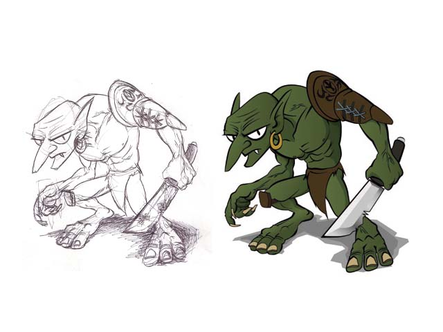

Cuando me propuse buscar colaboradores para el proyecto no me esperaba tener una acogida tan buena. Hace unas semanas, Antonio Caro Oca (@Hempfreud) contactó conmigo vía Twitter ofreciéndose junto a Daniel Pellicer García (@Danpelgar) para componer la música de algún juego que desarrollase. Mis ojos se abrieron como platos rápidamente, ¡música expresamente compuesta para Sion Tower! Hoy os muestro los primeros resultados.
Antonio Caro y Daniel Pellicer solían componer y editar piezas para juegos imaginarios y se han mostrado muy entusiasmados por ver reflejado su trabajo en un producto tangible. Tengo que decirles que el placer es totalmente mío, es un gustazo trabajar con gente tan profesional y con capacidad para adaptarse a las circunstancias. Han hecho un encomiable esfuerzo a la hora de entregar los primeros resultados antes de la fase local del CUSL. Partieron de las descripciones del documento de diseño (de nuevo queda patente su importancia) y fuimos comentando el estilo que debía tener la música. Con cada prueba que me mandaban íbamos opinando y en pocos días tenían los cambios listos.
Con esta banda sonora están haciendo que Sion Tower crezca muchísimo. A continuación tenéis una versión prácticamente acabada (aunque sujeta a cambios) de la canción que sonará durante las partidas. Toda la banda sonora está sujeta a una licencia Creative Commons by-nc-sa (atribución, no comercial, compartir igual).
Además de esta pista, están decididos a seguir trabajando con melodías para los menús y otras canciones para distintos niveles. Un lujo impagable.
La aparición de IberOgre en la web oficial de Ogre ya ha dado sus frutos y es que un usuario del foro no tardó en contactar conmigo para ofrecerme su colaboración. Mario Velázquez Muñoz nos ha proporcionado amablemente una traducción completa del manual oficial de Ogre3D liberada bajo la Free Documentation License.
Mario Velázquez es estudiante de Ingeniería Informática en la Universidad Carlos III de Madrid. Actualmente está terminando su PFC, un juego de skate llamado DHSkate del cual podéis ver un vídeo más abajo. Desde aquí quiero darle la enhorabuena por el magnífico trabajo de documentación que acompaña a su juego, si no obtiene matrícula de honor estaríamos ante una imperdonable injusticia. Como no podía ser de otra forma, le agradezco infinitamente su envidiable afán colaborativo. Es inspirador que no haya dudado poner a disposición de la comunidad el trabajo que ha desarrollado con tremendo esfuerzo.
El manual oficial de Ogre es un complemento excelente para los artículos de la wiki. Mientras que los tutoriales toman una aproximación didáctica, el manual sirve como documento de consulta avanzado. Estoy convencido de que esta aportación la agradecerán muchísimos usuarios. La versión original (en inglés) está disponible aquí.
En DHSkate el jugador debe descender una pendiente en el menor tiempo posible. Está desarrollado en C++ utilizando varias bibliotecas que complementan a Ogre como Newton (física), MyGUI (interfaz de usuario), cAudio (efectos y música) y CSS (control de la cámara). En breves lo publicará en SourceForge.
No dejo de sorprenderme la cantidad de gente con voluntad de colaborar en IberOgre y Sion Tower. ¡Muchas gracias a todos!
En esta ocasión muestro una prueba de lo que será el primer nivel de Sion Tower así como una implementación del control de la cámara. Los objetos que componen la escena los he modelado y texturizado con Blender. Posteriormente, compongo el nivel también con Blender, lo exporto a formato DotScene de forma que el sistema de niveles se encarga de procesarlo y construir la escena.
La demo técnica que publicaré en unos días ofrecerá este escenario con un control de cámara más pulido y al protagonista definitivo creado por AJR (animaciones internas incluidas).
Antonio Jiménez Rodríguez (AJR), nuestro artista 3D nos ofrece el primer enemigo del juego: el Goblin. Una vez más, demuestra su profesionalidad a través de este genial trabajo. ¡Con colaboradores así, da gusto trabajar!
La descripción del enemigo en el documento de diseño de Sion Tower es lo que ha tomado AJR para el bocetado y posterior modelado. Esto demuestra la importancia del GDD para transmitir los conceptos del juego a todos los miembros del equipo.
Enemigo básico sin ninguna afinidad elemental. Clásica criatura verde, desagradable y de baja estatura. Va armado con una tosca espada corta y un burdo taparrabos. Acuden en gran número (su gran ventaja), son ágiles pero no tienen grandes habilidades en combate.

Es improbable que me sea posible incluir enemigos en la demo técnica que quiero lanzar de cara a la fase local del CUSL. Aún necesito trabajar mucho la búsqueda de caminos y la inteligencia artificial. No obstante, el protagonista que ya he mostrado en otra ocasión sí hará acto de presencia.
Estad atentos porque en los próximos días hablaré de más colaboraciones. Ni yo mismo me lo creo y es que IberOgre y Sion Tower ya no son sólo cosa mía, lo que me enorgullece muchísimo. La cooperación y el trabajo en comunidad es exactamente lo que se pretende con el CUSL.
El primer sorprendido soy yo mismo y es que IberOgre ha aparecido en la cuarta sección de noticias de la web oficial de Ogre.
Para el proyecto es un acontecimiento de extrema importancia ya que una enorme cantidad de desarrolladores consulta la web, veremos si las visitas aumentan. En el plano personal no puedo estar más contento ya que ver recompensado mi esfuerzo de esta manera es de lo más gratificante. Esto me ha dado más ganas si cabe para continuar trabajando al 100%.
La historia de todo esto es muy sencilla. Puse un post en el foro hablando sobre IberOgre y Sion Tower en busca de usuarios hispano-hablantes con escasos resultados. No obstante, parece ser que los administradores se han fijado y ha acabado en plena portada de la web de mi motor de renderizado favorito.
Se lo he agradecido a los administradores via Twitter en inglés pero de nuevo: